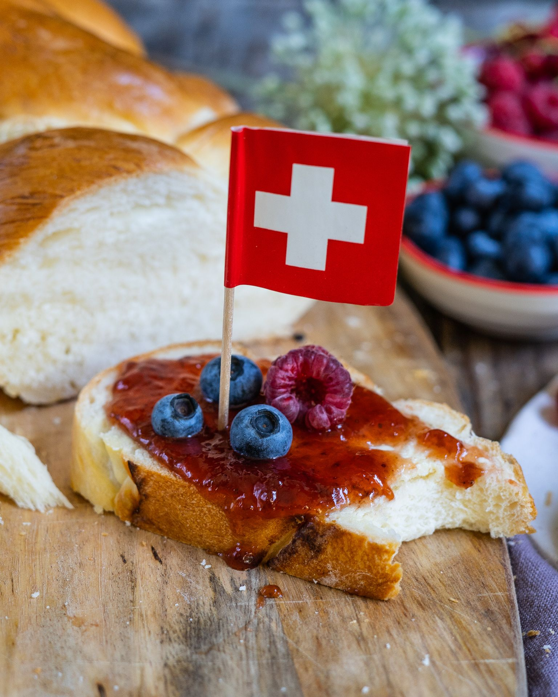

Go to:
Recipe 2: Treccia
Natural variant
- Difficulty: easy
- Preparation: 20 minutes
- Cooking: 30 minutes
- Serve for: 6 people
- Cost: low
Perfect fit for every sunday morning.

Ingredients:
- 500 g white flour
- 2 level teaspoons of salt
- 20 g of yeast
- 1 teaspoon sugar
- 70 g butter
- approx. 3 dl milk
- 1 egg
Preparation:
- Pour the flour and salt into a bowl and make a well. Mix the yeast with the sugar and pour into the centre. Melt the butter and pour in the milk, then add the milk and butter to the flour.
- Knead everything until a soft, homogeneous dough is obtained. Cover the dough with a damp cloth and let it rise at room temperature until the dough doubles in volume.
- Cut the treccia dough in half after it has risen and knead it on a flour-dusted surface to form two loaves.
- Place the loaves on the work surface and cross them. Create a treccia by overlapping the two strands of dough alternately.
- Beat the egg and brush the treccia twice. Bake in the middle of the oven at 200C for 25-30 minutes.